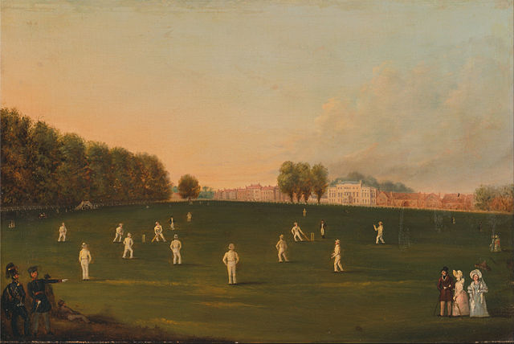

History of Cricket
Cricket, one of the world's most popular sports, has a rich history dating back to the 16th century in southeast England. The earliest definite reference to cricket being played comes from a court case in 1598, which mentioned a game being played by schoolboys in Surrey around 1550. By the late 17th century, it had become an established adult sport, with the first known match played in Sussex in 1697.
The 18th century saw cricket's rapid expansion and formalization. The Hambledon Club, founded in the 1760s, was the sport's first major club and played a significant role in developing the game's rules. In 1787, the Marylebone Cricket Club (MCC) was established at Lord’s in London, becoming the custodian of the Laws of Cricket. The sport spread globally with the British Empire, taking root in countries such as India, Australia, the West Indies, and South Africa.
The first international match was played in 1844 between the United States and Canada. In 1877, the first official Test match took place between England and Australia in Melbourne, marking the beginning of the sport's longest format. The late 19th and early 20th centuries saw the emergence of the Ashes series, a fierce rivalry between England and Australia.
Cricket continued to evolve, with the introduction of limited-overs cricket in the 1960s, leading to the first One Day International (ODI) in 1971. The inaugural Cricket World Cup was held in 1975. The Twenty20 (T20) format, introduced in 2003, further revolutionized the game, making it faster and more accessible to a broader audience. Today, cricket is a major global sport, celebrated for its diverse formats and rich traditions.

Basic Rules
ricket is a bat-and-ball game played between two teams of eleven players. Each team takes turns batting and fielding. The game is played on a circular field with a rectangular 22-yard pitch at the center. The batting team aims to score runs by hitting the ball bowled by the fielding team's bowler and running between the wickets, or by hitting boundaries. The fielding team aims to dismiss the batsmen by hitting the stumps (bowled), catching the ball, or other methods such as run-out and LBW (leg before wicket).
A match can be in different formats: Test (five days), One Day International (50 overs per side), or Twenty20 (20 overs per side). Each over consists of six deliveries. The team with the most runs at the end of the match wins. Key positions include the batsman, bowler, wicketkeeper, and fielders. Cricket is governed by a set of rules known as the Laws of Cricket, maintained by the Marylebone Cricket Club (MCC).